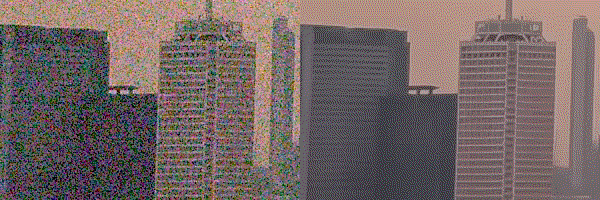

Shi GUO PhD StudentThe Hong Kong Polytechnic University |
Short Bio
I am a research intern and will work at Shanghai AI Laboratory. I am also a fourth-year PhD student (Sep. 2019 - ) of the Department of Computing, Hong Kong Polytechnic University supervised by Prof. Lei Zhang. I have received my Master degree at school of Computer Science and Technology, Harbin Institute of Technology, supervised by Prof. Wangmeng Zuo. I also received my Bachelor degree in the Honors School from Harbin Institute of Technology majoring in Automation.
Selected Publications

|
Event-Based Motion Magnification
Yutian Chen, Shi Guo† , Fangzheng Yu, Feng Zhang, Jinwei Gu, Tianfan Xue arXiv, 2024 project page / video / arXiv Broad and cost-effective solution to magnify imperceptible high-frequency motion. |
|

|
Toward Accurate and Temporally Consistent Video Restoration from Raw Data
Shi Guo , Jianqi Ma, Xi Yang, Zhengqiang Zhang, Lei Zhang arXiv, 2023 arXiv |

|
Spatial-Frequency Attention for Image Denoising
Shi Guo* , Hongwei Yong*, Xindong Zhang, Jianqi Ma, Lei Zhang arXiv, 2023 arXiv Effectively enlarge the receptive field. |

|
A differentiable two-stage alignment scheme for burst image reconstruction with large shift
Shi Guo , Xi Yang, Jianqi Ma, Gaofeng Ren, Lei Zhang arXiv, 2023 arXiv Effectively enlarge the receptive field. |
Academic Service and Challenge
Reviewer CVPR, ICCV, ECCV, NeurIPS, ICLR, AAAI
Reviewer PAMI, TIP, PR